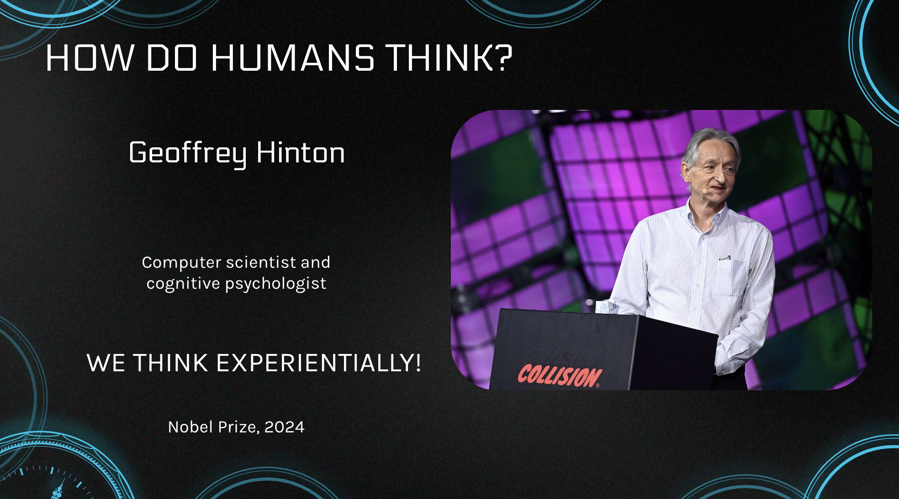
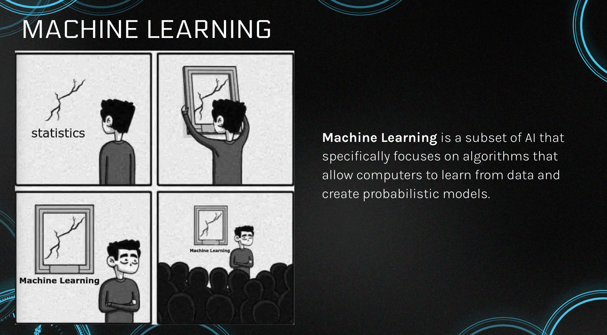
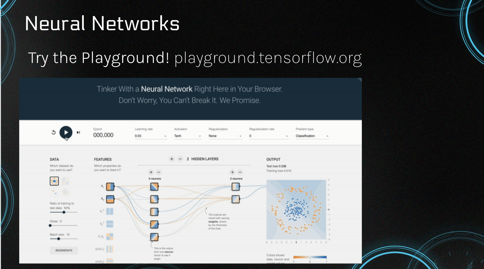
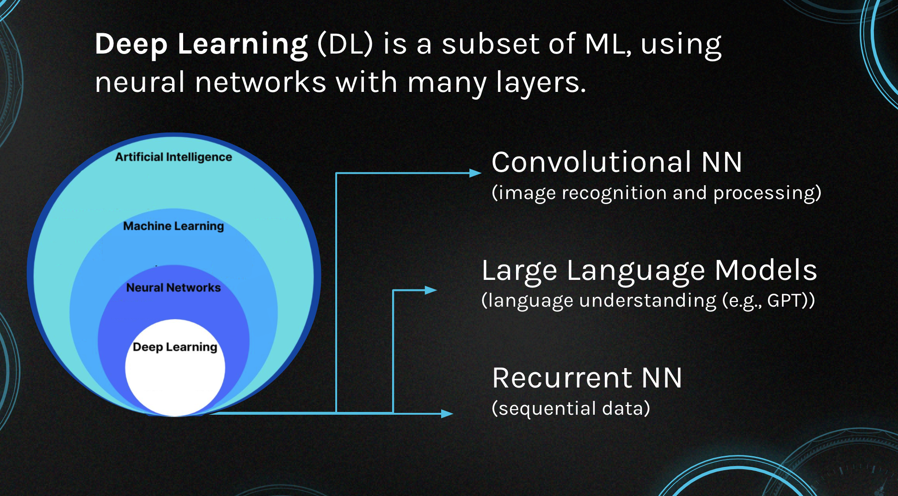
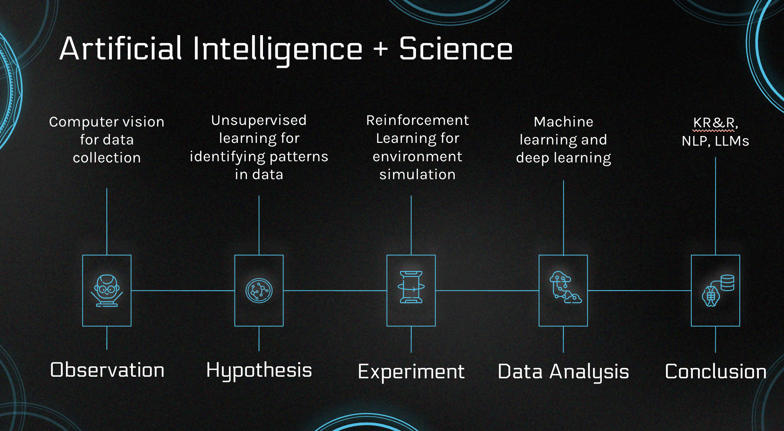

2 AI for Everyone
2.1 Learning Objectives
This session introduces AI to a non-specialist audience, ensuring participants can understand essential concepts. The focus is on key terminology and principles of machine learning (ML), deep learning (DL), and neural networks (NN). By the end of this session, participants will have foundational knowledge of AI concepts to engage with more advanced topics.
2.2 Table of Contents
- What is AI? History and Challenges
- Types and Techniques
- Working with Data
- The Role of AI in Modern Research
- The Future of AI & Science
- Hands-On: Setting up the Coding Environment
2.3 What is AI?
Artificial Intelligence (AI) refers to computer systems capable of performing tasks requiring cognitive functions, such as recognizing patterns, learning from data, and making predictions.
But what is human intelligence? Well, we don’t really know…
Let’s focus on a simpler question. 
We think experientially or in other words, probabilistically.
2.4 AI Types and Techniques
2.4.1 Machine Learning (ML)

- Supervised Learning: Training on labeled data.
- Unsupervised Learning: Discovering patterns within unlabeled data.
- Semi-Supervised: Training on autogenerated labeles.
- Reinforcement Learning (RL): An agent learns by interacting with an environment, commonly used in robotics.
2.4.2 Neural Networks (NN)
Neural Networks are loosely inspired by the brain’s structure, NNs consist of interconnected nodes (neurons) that process information. NN Playground:

2.4.3 Deep Learning

- Convolutional Neural Networks (CNN) are specialized for processing structured data, like images.
- Large Language Models (LLM) are neural networks that understand and generate human language (e.g., GPT-3).
- Recurrent Neural Networks (RNN) handle sequential data by remembering previous inputs,. They are used for tasks like speech recognition and time series.
2.5 Data
“Garbage in, garbage out”, or quality data leads to accurate models.
- Structured Data: Clearly defined types (e.g., temperature readings).
- Unstructured Data: Complex formats (e.g., satellite imagery), requiring preprocessing.
Key takeaway: Data is the foundation for accurate predictions and insights in AI.
2.6 Rapid Surge in AI Talk: Why Now?
2.6.1 Brief History:
1986: Backpropagation was introduced by Geoffrey Hinton and colleagues, revolutionizing neural networks by enabling them to adjust weights and improve through learning. This breakthrough laid the foundation for modern deep learning.
2017: The Transformer architecture was introduced, which transformed natural language processing (NLP) using an attention mechanism. It allowed models to weigh the importance of words in a sequence and process entire sentences in parallel, significantly improving efficiency and accuracy.
2018-2020: The combination of backpropagation, advanced computing power (GPUs, cloud technology), and the availability of large datasets led to the rise of Large Language Models (LLMs) like GPT-3, with 175 billion parameters, capable of generating human-like text and answering questions.
Key takeaway: The transformer model paved the way for advanced LLMs like GPT-3, driving the current AI surge. Advancements in computing power allowed these models to process massive datasets quickly, enabling them to generate highly accurate predictions, perform complex tasks, and revolutionize fields such as language processing, automation, and research.
2.7 The Future of AI in Science

Scientific Method and AI:
- Observation: AI aids data collection (e.g., computer vision).
- Hypothesis: Unsupervised learning clusters data.
- Experiment: Reinforcement learning simulates environments.
- Conclusion: AI can analyze data and validate hypotheses. AI helps identify patterns in data and can support every step of the scientific method, from observation to conclusion.
2.8 Additional Resources
Books: - Ray Kurzweil, How to Create a Mind (2012) - Max Bennett, A Brief History of Intelligence (2023) Videos: - 3Blue1Brown’s Neural Networks Playlist
Papers: - Jakob Uszkoreit, The Transformer (2017)
2.9 Do You Have Any Questions?
Feel free to reach out! /n - Email: alyonak@nceas.ucsb.edu - Website: alonakosobokova.com - YouTube: Dork Matter Girl